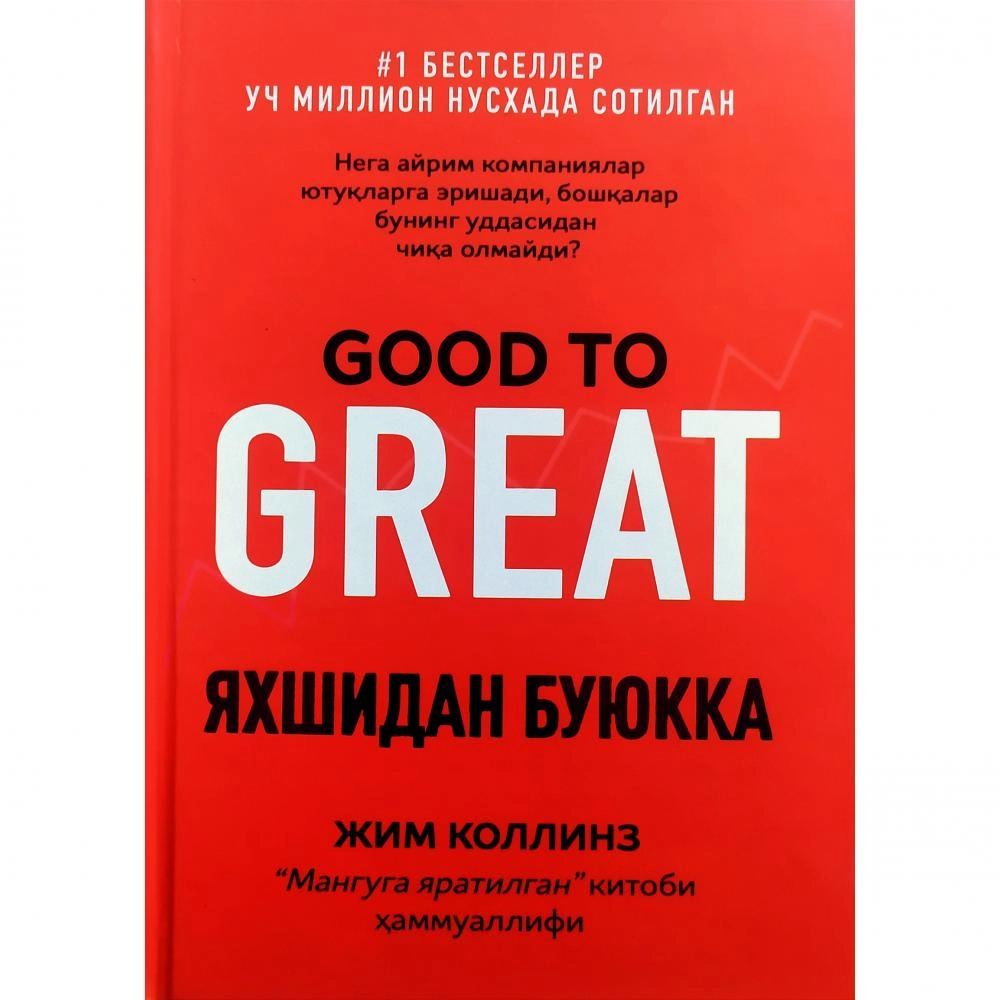

Kitob birinchi bor 1989 yilda nashrdan chiqadi. Oradan 15 yil o ‘tib, 2004 yil kitob 38dan ortiq turli tillarga tarjima qilingan. 2011 yil avgustda “Time” jurnali ushbu kitobni asosiy biznes kitoblarning 25talik ro‘yxatiga kiritgan. Kitob bugungi kunga qadar butun dunyo bo‘ylab 40 milliondan ortiq nusxada sotilgan. Kitob doimo muvaffaqiyatga intiluvchilar uchun. U insonning rivojlanishi, hayot mazmuni va voqea-hodisalarga reaksiyasi, yaʼni javobi haqida. Stiven Kovi juda ko‘plab liderlik, muvaffaqiyat, samaradorlik mavzusidagi kitoblarni nafaqat o‘qigan, balki tahlil ham qilgan. Asarda ko‘plab mashhur (shunchaki mashhur emas, balki o‘zini maksimal darajada rivojlantirib, ichki xotirjamlikka erishgan)lardan misol keltiriladi. Ulardan eng yorqini - Viktor Frankl, “Hayotga “Ha” deyish: konslager Psixologi” kitobi muallifidir.

Сизга ҳаётингизни ўзгартиришда муҳим бўлган ажойиб китобни она тилимизда тақдим этишдан хурсандмиз. Нима мақсад қўйганингиздан қатъий назар, ушбу китоб сизга ҳар куни оз-оздан яхшиланиб боришнинг синалган дастурини таклиф қилади. Одатларни шакллантириш бўйича дунёнинг етакчи экспертларидан бори Жеймс Клир яхши одатларни шакллантириш, ёмонларидан халос бўлиш ҳамда катта натижаларга олиб борувчи кичик одатларни эгаллашни ўргатувчи амалий стратегияларни очиб беради. Агар одатларингизни ўзгартиришни уддасидан чиқа олмаётган бўлсангиз, муаммо сизда эмас. Муаммо тизимда. Ёмон одатлар такрорланаверишининг сабаби сиз уларни ўзгартиришни хоҳламаётганингизда эмас, балки ўзгариш учун нотўғри тизим танлаганингизда. Сиз мақсадларингизнинг даражасига кўтарилмайсиз, билъакс тизимларингиз даражасига тушиб қоласиз. Мазкур китобда эса сизни янги чўққиларга олиб чиқувчи синашта тизим билан танишасиз. Клир мураккаб мавзуларни ҳам кундалик ҳаётга ва ишга осонгина татбиқ қилса бўладиган оддий одатларга боғлаб, ечим бера олиши билан танилган. Китобда у яхши одатларни муқаррар, ёмонларини эса иложсиз қилиш бўйича тушунишга осон йўриқнома яратар экан, биология, психология ва нейроилмдаги энг ишончли ғояларга суянади. Мутолаа давомида китобхон Олимпиададаги олтин медаль соҳиблари, етакчи бизнесменлар, инсон ҳаётини сақлаб қолган шифокорлар ўз касбини устаси бўлишда митти одатлар илмидан фойдалангани ҳамда соҳада энг зўрига айлангани ҳақидаги ҳаётий ҳикояларини ўқиб, руҳланади. Қандай қилиб: - янги одатлар учун вақт ажратишни (ҳатто қиладиган ишларингиз ошиб-тошиб кетганда ҳам); - иштиёқсизлик ва иродасизликни енгишни; - атроф-муҳитни муваффақиятга эришишни осонлаштирадиган қилиб тартиблашни; - йўлдан адашганда ортга қайта олишни ва бошқа кўплаб нарсаларни ўрганинг. «Атом одатлар» ўсиш ва муваффақият ҳақидаги фикрларингизни ўзгартиради ҳамда сизга одатларингизни ўзгартиришда зарур бўлган қурол ва стратегияларни тақдим этади. Хоҳ чемпионатда ғалаба қозонишни истаётган жамоа бўлинг, хоҳ соҳага қайта жон беришга умид қилган ташкилот, ёки шунчаки чекишни ташлашни, озишни, стрессни камайтиришни ёки яна бошқа бир мақсадга эришишни хоҳлаётган оддий инсон бўлинг, бу китоб сизга наф келтирмай қолмайди.
BUYҚўлингиздаги ушбу китоб катта бир жамоанинг кўп йиллик чуқур тадқиқотининг натижасидир. Узоқ йиллик меҳнатнинг самараси ўлароқ, асарда келтирилган ҳар бир маълумотнинг қиймати баланд ва сизга у жуда катта муваффақиятлар келтириши аниқ. Биз ўртамиёналикка, яхши бўлишга кўникиб қолганмиз. Буюкликка, юксакликка эришолмаймиз. Олдинга юришдан қўрқамиз, шунинг учун камчиликкагина буюк тақдир ва буюк ҳаёт насиб қилади. Зеро бизнес таваккалчилик асосига қурилади. Ўз бизнесингизни бошлаганингизга анча бўлди, бизнесингиз юриб турибди, аммо олдинга силжиш, ўсиш йўқ. Нима қилишни билмаяпсизми? Унда бу қўлланма айнан сиз учун! Бизнесингизнинг ғилдирагини шиддат билан айлантиришни бизга қўйиб беринг. Сиздан фақат диққат билан ўқиб чиқиш ва амал қилиш қолди холос. Сизга қунт ва сабр тилаймиз! Инглиз тилидан Саодат Абдурахмонова ва Ҳулкар Дарманова таржимаси
 BUYМавлоно Жалолиддин Румий ҳазратларининг «Маънавий маснавий» асари етти асрдан буён Шарқ тафаккури бадиий калом мухлисларини ўзига мафтун этиб келмоқда. Ушбу тенгсиз адабий обида ҳар бир инсон эгасини Ҳақ ва ҳақиқат сари юксалтирувчи руҳий-қалбий нарвондир. Ушбу китоб илк бор форс ва ўзбек тилларида, Кўниё кутубхонасида сақланаётган энг мўътабар қўлёзма асосида нашрга тайёрланди. Ўзбек тилидаги таржимаси эса истеъдодли шоир Одил Икром томонидан амалга оширилди. Азиз ўқувчилар ўз имкони даражасида ушбу бепоён маънавий уммондан баҳраманд бўлиши мумкин.
Ushbu risolada Imom Aʼzamning shogirdi Abdulloh ibn Muborakning tijorat bilan bog‘liq faoliyatib halolligi, taqvosi va o‘gitlari yoritib berilgan. Risolani o‘qigan har bir kitobxon Abdulloh timsolida savdo-sotiq ishlarida rostgo‘y va diyonatli bir kishining siymosi bilan yuzlashadi hamda o‘ziga tegishli xulosa chiqaradi degan umiddamiz. Risolada quyidagi jihatlarga jiddiy eʼtibor qaratilgan: - Savdoda halol bo‘lmoq;
BUYРежалаган ишларингизга етарли вақт топилмаётган; Шахсий мажбуриятлар, лойиҳалар, вақт ортса, ўқийман деганингиз талай журнал ва китоблар юки босиб қолган. Бироқ сиз уларга улгурмаётган. Ишларингизни тўлиқ адо этишга умид ҳам қилмаётган; Кўнглингиздагидек дам олишга вақт орттира олмаётган; Ишларингизни самарали йўлга қўйиш усулларини ҳар қанча ўрганманг, режалаган юмушларингиз ортиб, барибир вақт етмай қолятган бўлса, ушбу китоб айнан сиз учун! Китоб вақтни тўғри тақсимлаш, иш ёки ўқиш жараёнини ташкиллаштириш, ҳаёт тарзини ўзгартириш, натижада қандай қилиб самарадорликка эришиш ҳақида назариядан узоқ, аниқ маълумот ва қўлланмаларни беради. Китоб талабалар, тадбиркорлар, ишчилар, раҳбарлар, куни ва вақтини тартибни солишни хоҳлайдиган ҳатто уй бекаларига ҳам тавсия қилинади.
BUYҚўлингиздаги ушбу китоб айни пайтдаги тадбиркор томонидан ёзилган. Ушбу китоб орқали сиз амалдаги тадбиркорнинг билим ва тажрибаларига эга бўласиз. Албатта, фаолият давомида бизнесни барбод қилишга оид омиллар етарлича топилади. Ушбу китоб сизларни ана шу хатолар билан бирма-бир таништиради. Чунки тадбиркорлик фаолиятини юритаётган инсон ана шу хатоларга дуч келиши аниқ. Шундай экан, ушбу китоб Сизларга яқин кўмакчи бўлади, деб ўйлаймиз.
BUYUlug’mutasavvif shoir, mutafakkir va tazkiranavis Fariduddin Attorning ushbu kitobi nasrda bitilgan yagona va mashhur asar hisoblanadi. Ushbu tazkirada allomalarning ilmiy-nazariy qarashlari va ta’limotini asoslash, tasdiqlash maqsadida tarixiy voqealar, hayotiy tajriba, qadimda yashab o’tgan mashoyixlarining ibratli kechmishlari hikoya, masal hamda naqllar bilan keltirib o’tilgan. Mazkur kitob o’zbek tiliga tarjima qilingan oldingi nashrlardan mukammalligi va asliyatga hamohangligi bilan ajralib turadi.
BUYБу фоний дунё ҳаётини адолатли деб бўлмайди. Негаки, унда пул, ҳокимият, шон-шуҳрат ва омад одамларнинг барчасига тенг тақсимланган эмас. Нега айрим одамларнинг ҳамма нарсаси бор, бошқаларда эса ҳеч вақо йўқ? Омаднинг сабабларини фақат инсоннинг табиат инъом этган шахсий фазилатлари билан боғлаш тўғримикин? Малколм Гладуэлл ҳар доим мутлоқо тасодиф ҳисоблаб келинган муваффақиятларнинг замирида ётган яширин қонуниятларни топган биринчи инсондир. Бу қонуниятлар нега аксарият буюк хоккейчилар фақат январда туғилганлигини ва ҳеч қачон октябрда туғилмаслигини, нима учун математикани осиёлик талабалар бошқалардан кўра осонроқ ўзлаштиришини, нега Нью-Йоркнинг энг обрўли адвокати бўлиш учун албатта яҳудий бўлиш лозимлигини тушунтириб беради. Бу китоб Билл Гейтс, «Битлз» ва Моцарт каби шахсларни нима боғлаб туришини ҳамда улар нега ўз тенгдошларидан ўзиб кетганлигини кўрсатади. «Зукколар ва ландавурлар» — «қандай қилиб муваффақиятли инсон бўлиш» бўйича қўлланма эмас. Бу сиз ўзингизга фойдали тарзда фойдаланишингиз мумкин бўлган ҳаёт қонуниятлари оламига завқли бир саёҳатдир. Бир неча йил давомида “New York Times” ва “Amazon” бестселлерлари рўйхатидан тушмаган ушбу китобни кўплаб мутахассислар муваффақият ҳақидаги энг жиддий китоб деб талқин этишган. Китоб талабаларга, ўқитувчиларга, ўқувчиларга, тадбиркорларга, умуман муваффақият қонунларини кашф этиш, ўз ишида профессионал бўлишни, бирор бир соҳани ўрганишни хоҳлайдиганларга тавсия этилади.
BUY